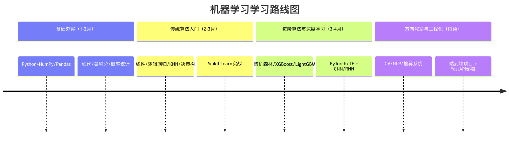
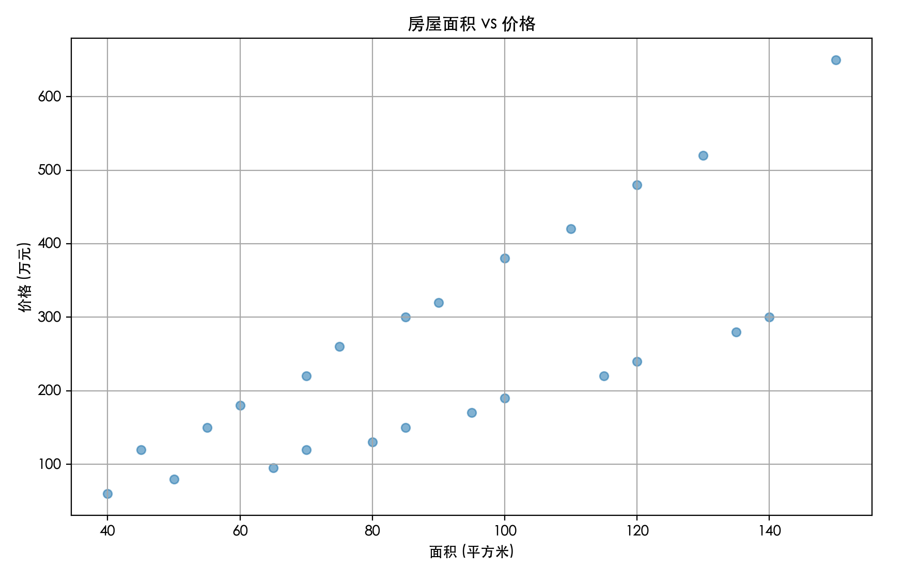
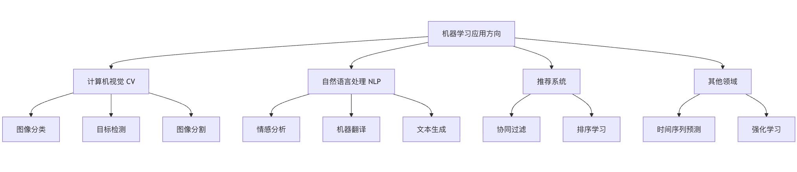

機械学習 - 学習ロードマップ
機械学習は今日最も注目されている技術分野のひとつであり、コンピュータがデータから学習し、予測や意思決定を行えるようにします。
初心者にとっては、膨大なアルゴリズム、数学理論、プログラミングツールを前にすると、どこから始めればよいか迷ってしまいがちです。
本記事では、ゼロから実践力が身につくまでの機械学習の学習ロードマップを紹介します。

| 機械学習 - 学習コース一覧 | |
|---|---|
| 基礎入門 | |
| 基礎入門 | 機械学習チュートリアル |
| 基礎入門 | 機械学習の概要 |
| 基礎入門 | 機械学習のライフサイクル |
| 基礎入門 | 機械学習の仕組み |
| 基礎入門 | 機械学習の基本用語 |
| 基礎入門 | Pythonではじめる機械学習 |
| 基礎入門 | Python機械学習ライブラリ |
| 基礎入門 | よく使うデータ型 |
| 基礎入門 | 機械学習の応用 |
| データ処理と統計 | |
| データ処理と統計 | データの理解 |
| データ処理と統計 | データクリーニング |
| データ処理と統計 | 特徴量エンジニアリング |
| データ処理と統計 | データ可視化 |
| データ処理と統計 | トレーニングセットとテストセットの分割 |
| データ処理と統計 | 統計学の基礎 |
| データ処理と統計 | 確率的思考 |
| データ処理と統計 | 損失関数と勾配 |
| データ処理と統計 | 過学習、未学習、バイアスとバリアンス |
| 教師あり学習 | |
| 教師あり学習 | 機械学習アルゴリズム |
| 教師あり学習 | 線形回帰 |
| 教師あり学習 | 重回帰 |
| 教師あり学習 | 多項式回帰 |
| 教師あり学習 | ロジスティック回帰 |
| 教師あり学習 | 回帰モデルの評価 |
| 教師あり学習 | 決定木 |
| 教師あり学習 | サポートベクターマシン |
| 教師あり学習 | K近傍法 |
| 教師あり学習 | アンサンブル学習 |
| 教師あり学習 | ナイーブベイズ |
| 教師あり学習 | ランダムフォレスト |
| 教師あり学習 | 分類指標 |
| 教師なし学習 | |
| 教師なし学習 | クラスタリング |
| 教師なし学習 | 次元削減 |
| 強化学習 | |
| 強化学習 | 強化学習の基本フレームワーク |
| 強化学習 | 強化学習：探索vs活用 |
| 強化学習 | 強化学習 Q-learningとSARSA |
| 強化学習 | 深層強化学習 |
| 深層学習 | |
| 深層学習 | ニューラルネットワークの基本構造 |
| 深層学習 | 順伝播と逆伝播 |
| 深層学習 | 深層学習vs従来の機械学習 |
| 深層学習 | 代表的なネットワークの種類 |
| モデル最適化とエンジニアリング | |
| モデル最適化とエンジニアリング | 交差検証 |
| モデル最適化とエンジニアリング | 正則化 |
| モデル最適化とエンジニアリング | データリーク |
| モデル最適化とエンジニアリング | アンサンブル手法 |
| モデル最適化とエンジニアリング | ハイパーパラメータ探索 |
| モデル最適化とエンジニアリング | MLOpsの概念 |
| モデル最適化とエンジニアリング | よくある問題のトラブルシューティング |
| 機械学習の限界と境界 | |
| 機械学習の限界と境界 | 解釈可能性の問題 |
| 機械学習の限界と境界 | 仮定の制約 |
| 機械学習の限界と境界 | データのバイアス |
| 機械学習の限界と境界 | モデルの現実的なコスト |
| 実践ケース | |
| 実践ケース | タイタニック号生存予測 |
| 実践ケース | 住宅価格予測 |
| 実践ケース | 顧客セグメンテーション |
| 実践ケース | PCA可視化 |
| 実践ケース | 強化学習の例 |
第一段階：基礎固め編 - 強固な基盤を築く
複雑なアルゴリズムに触れる前に、知識という建物を支える土台を築く必要があります。この段階の目標は、必要な数学・プログラミング・データ分析スキルを身につけることです。
核心スキルその1：プログラミング言語（Python）
Pythonは機械学習分野の共通言語であり、構文が簡潔でライブラリのエコシステムが豊富なことから広く利用されています。
学習目標：Pythonの基本構文、データ構造、関数、オブジェクト指向プログラミングを習得します。
主要ライブラリ：
NumPy：効率的な数値計算に使用され、ほぼすべての科学計算ライブラリの基盤です。Pandas：データのクリーニング・分析・処理に使用され、データテーブル（DataFrame）を操作するための強力なツールです。Matplotlib/Seaborn：データ可視化に使用され、データを直感的なグラフに変換します。
次に、1つの事例を見てみましょう。
テストデータ house_prices.csv のファイル内容：
面积,价格,房龄,卧室数,城市 45,120,15,1,北京 60,180,12,2,北京 75,260,8,2,北京 90,320,6,3,北京 110,420,5,3,北京 130,520,3,4,北京 50,80,20,1,成都 70,120,15,2,成都 85,150,12,3,成都 100,190,10,3,成都 120,240,8,4,成都 140,300,5,4,成都 55,150,18,1,上海 70,220,14,2,上海 85,300,10,2,上海 100,380,8,3,上海 120,480,6,3,上海 150,650,4,4,上海 40,60,22,1,武汉 65,95,16,2,武汉 80,130,12,2,武汉 95,170,9,3,武汉 115,220,7,3,武汉 135,280,5,4,武汉
例
import pandas as pd
import matplotlib.pyplot as plt
# -------------------------- 中国語フォントの設定 start --------------------------
plt.rcParams['font.sans-serif'] = [
# Windows 優先
'SimHei', 'Microsoft YaHei',
# macOS 優先
'PingFang SC', 'Heiti TC',
# Linux 優先
'WenQuanYi Micro Hei', 'DejaVu Sans'
]
# マイナス記号が四角く表示される問題を修正
plt.rcParams['axes.unicode_minus'] = False
# -------------------------- 中国語フォントの設定 end --------------------------
# 1. データの読み込み
data = pd.read_csv('house_prices.csv')
print("データの先頭5行：")
print(data.head())
# 2. データの基本情報を確認
print("\nデータ情報：")
print(data.info())
# 3. 住宅面積と価格の散布図を描画
plt.figure(figsize=(10, 6))
plt.scatter(data['面積'], data['価格'], alpha=0.5)
plt.title('住宅面積 vs 価格')
plt.xlabel('面積 (平方メートル)')
plt.ylabel('価格 (万元)')
plt.grid(True)
plt.show()
実行すると、出力されるグラフは次のようになります。

核心スキルその2：必要な数学知識
数学者になる必要はありませんが、アルゴリズムの背後にある基本的なロジックを理解する必要があります。
- 線形代数：ベクトル、行列、行列の掛け算を理解します。これは、データが多次元空間でどのように表現・変換されるかを理解するための基礎です。
- 微分積分：重要なのは微分係数と偏微分係数の概念を理解することです。これらは勾配降下法などの最適化アルゴリズムの中核であり、モデルの最適なパラメータを見つけるために使われます。
- 確率と統計：平均、分散、標準偏差、確率分布、条件付き確率、ベイズの定理を理解します。これはモデルの評価や不確実性の理解に不可欠です。
例え話：機械学習モデルを複雑なミキサーと想像してください。数学の知識は、各つまみ（パラメータ）が最終的な音（予測結果）にどのように影響するかを理解するための取扱説明書です。説明書がなければ、盲目的に回すしかありません。
第二段階：入門編 - 定番アルゴリズムをマスターする
強固な基盤ができたら、機械学習の核心であるアルゴリズムを探索し始めることができます。最も定番で直感的なアルゴリズムから始めることをお勧めします。
教師あり学習入門
教師あり学習とは、ラベル付きデータを使ってモデルを訓練することです。
- 線形回帰：住宅価格などの連続値を予測します。そのコスト関数と勾配降下法による最適化プロセスを理解します。
- ロジスティック回帰：分類問題（メールがスパムかどうかの判定など）を解決します。シグモイド関数と決定境界を理解します。
- K近傍法 (K-NN)：インスタンスベースのシンプルな分類・回帰アルゴリズムです。
- 決定木：人間の意思決定プロセスを模倣したもので、非常に直感的で分かりやすいです。
教師なし学習入門
教師なし学習は、データ内の構造やパターンを発見するために使われます。
- K平均法（K-meansクラスタリング）：データを自動的にK個のクラスタにグループ化します。
- 主成分分析 (PCA)：データの次元削減と可視化に使われ、最も重要な特徴を抽出します。
ツールのアップグレード：この段階では、体系的にscikit-learnライブラリを使い始めます。統一されたAPIを提供しており、さまざまなアルゴリズムを迅速に実装・比較・評価できます。
例
from sklearn.model_selection import train_test_split
from sklearn.linear_model import LogisticRegression
from sklearn.metrics import accuracy_score, classification_report
# =========================
# 1. 実行可能なテストデータを構築する
# シナリオ：試験に合格するかどうか（1=合格、0=不合格）
# 特徴：学習時間、出席率、課題完了率
# =========================
X = np.array([
[2, 60, 50],
[3, 65, 55],
[4, 70, 65],
[5, 75, 70],
[6, 80, 75],
[7, 85, 80],
[8, 90, 85],
[9, 92, 88],
[10, 95, 90],
[11, 97, 92],
[1, 50, 40],
[2, 55, 45],
[3, 60, 50],
[4, 65, 55],
[5, 70, 60],
[6, 75, 65],
[7, 80, 70],
[8, 85, 75],
[9, 90, 80],
[10, 95, 85]
])
y = np.array([
0, 0, 0, 0, 1,
1, 1, 1, 1, 1,
0, 0, 0, 0, 0,
1, 1, 1, 1, 1
])
# =========================
# 2. トレーニングセットとテストセットに分割する
# =========================
X_train, X_test, y_train, y_test = train_test_split(
X, y, test_size=0.3, random_state=42
)
# =========================
# 3. モデルを作成して訓練する
# =========================
model = LogisticRegression(max_iter=1000)
model.fit(X_train, y_train)
# =========================
# 4. 予測を行う
# =========================
y_pred = model.predict(X_test)
# =========================
# 5. モデルの性能を評価する
# =========================
print(f"モデル精度：{accuracy_score(y_test, y_pred):.2f}")
print("\n詳細な分類レポート：")
print(classification_report(y_test, y_pred))
出力内容：
模型准确率：0.83
详细分类报告：
precision recall f1-score support
0 0.67 1.00 0.80 2
1 1.00 0.75 0.86 4
accuracy 0.83 6
macro avg 0.83 0.88 0.83 6
weighted avg 0.89 0.83 0.84 6
第三段階：アドバンス編 - 中核領域を深く学ぶ
定番アルゴリズムを習得したら、より現代的で強力な分野に進むことができます。
伝統的な機械学習を深く学ぶ
- アンサンブル学習：複数の弱学習モデルを組み合わせて強力なモデルを構築する方法を学びます。
- ランダムフォレスト：複数の決定木のアンサンブルであり、過学習に対する耐性が強いです。
- 勾配ブースティング木（XGBoost、LightGBMなど）：コンペティションや業界で非常に人気のある高性能アルゴリズムです。
- サポートベクターマシン (SVM)：マージンを最大化するという核心的な考え方を理解します。
- モデルの評価と最適化：交差検証、ハイパーパラメータ調整（GridSearchCVなど）、過学習・未学習を解決する方法について深く学びます。
ディープラーニングに踏み込む
データ（特に画像、テキスト、音声）が複雑になると、ディープラーニングがその強力な能力を発揮し始めます。
- ニューラルネットワークの基礎：ニューロン、活性化関数、順伝播、逆伝播、損失関数を理解します。
- ディープラーニングフレームワーク：選択する
PyTorch（研究に適しており柔軟）またはTensorFlow/Keras（本番環境に成熟し、エコシステムが整っている）のいずれかを深く学びます。 - 畳み込みニューラルネットワーク (CNN)：画像データ処理の標準であり、畳み込み層とプーリング層の役割を理解します。
- リカレントニューラルネットワーク (RNN) と長短期記憶ネットワーク (LSTM)：テキストや時系列などのシーケンスデータを処理するための強力なツールです。
例
from tensorflow import keras
from tensorflow.keras import layers
model = keras.Sequential([
layers.Dense(64, activation='relu', input_shape=(input_dim,)), # 隠れ層1
layers.Dropout(0.2), # ドロップアウト層、過学習を防ぐ
layers.Dense(32, activation='relu'), # 隠れ層2
layers.Dense(1, activation='sigmoid') # 出力層、二値分類用
])
model.compile(optimizer='adam',
loss='binary_crossentropy',
metrics=['accuracy'])
model.summary() # モデル構造を表示する
# その後、model.fit を使ってトレーニングできます
第四段階：応用・発展編 - 方向性を定め、実問題を解決する
機械学習には多くの分野があります。この時点で、興味やキャリアプランに基づいて一つの方向性を選んで深く掘り下げる必要があります。
主要な方向性の選択

- コンピュータビジョン (CV)：CNNの変種（ResNet、YOLO）を深く研究し、画像分割や物体検出を学びます。
- 自然言語処理 (NLP)：ワードエンベディング（Word2Vec）からTransformerアーキテクチャ（BERT、GPT）まで学び、テキスト分類、感情分析、機械翻訳を習得します。
- レコメンドシステム：協調フィルタリング、行列分解、ディープラーニング推薦モデルを学びます。
- 強化学習：エージェントが環境との相互作用を通じて最適な方策を学習するもので、ゲームAIやロボット制御の核心です。
エンジニアリング化とデプロイ
トレーニング済みモデルを本番環境にデプロイし、実際のサービスを提供する方法を学びます。
- モデルの保存と読み込み（
pickle,joblib,.h5ファイル）。 - Flask/FastAPIを使って簡単なAPIサービスを構築する。
- Dockerコンテナ化を理解するおよびクラウドサービス（AWS SageMaker、Google AI Platformなど）の基本概念を理解します。
まとめとリソース推奨
学習パスの可視化
実践こそ唯一の近道
最も重要なアドバイス：学びながら実践する、プロジェクト駆動！
- 模倣：チュートリアルや論文のプロジェクトを再現します。
- 実践：Kaggleや天池などのプラットフォームで入門レベルのコンペティションに参加します。
- 創造：機械学習を使って個人的に興味のある小さな問題（運動データの分析、写真の自動分類など）を解決してみます。
良質なリソースの紹介
- 定番コース：アンドリュー・ン『機械学習』（Coursera）、李沐『動手学深度学習』。
- 実践プラットフォーム：Kaggle（コンペティションとデータセット）、Google Colab / Jupyter Notebook（無料のクラウド環境）。
- 知識の定着：読む
scikit-learn、PyTorch公式ドキュメントを読み、Stack Overflowや関連フォーラムコミュニティで交流します。
クリックしてノートを共有
ノートは本記事の内容を拡張したものである必要があります！
記事の投稿はこちらをクリック
登録招待コードの取得方法
ノートを共有する前にログインが必要です！
登録招待コードの取得方法